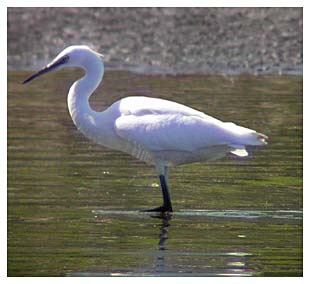

Little Egret
First recorded in 1992, this species of heron has become increasingly common & can now be seen regularly, especially in winter. Maximum count is an incredible 43 in January 2017.

29/09/92 - Single bird. 1st record for reservoir (BS)
15/01/93 - Single bird. Roosted overnight. Seen again following day, to roost. Not seen next day
22/12/95 - Single bird (DL). Seen again 29 & 30/12/95 (DWH)
??/01/96 - Single bird still present from 22/12/95
12/01/96 - 2 birds (DWH). Joined by a 3rd on 08/02. All 3 remained until 12/02. Single bird remained until at least 03/03
09/01/97 - 2 birds on frozen reservoir (BS). Remained until 27/02 with 1 staying until 08/03
31/07/97 - Single juvenile. Roosted overnight
02/08/98 - 6 birds (LM)
25/11/98 - Single bird. Remained until 28/11
12/12/98 - 2 birds roosted with a single remaining until 25/12
02/01/99 - 2 birds. Present since 12/12/98, remained until 11/01 with 1 on 16/01 & 3 on 19/01 until 21/01
29/01/99 - Single bird. Present until at least 26/02
17/09/99 - 6 birds (LM)
14/10/99 - Single bird. Seen frequently until the end of the year, with 2 birds present 26/12
06/01/00 - Single bird. 2 seen 23/01. Single during March, single 03/09 and during November and December
2001 - None until end of July then one regular with 3 on 25/09, 09/10 and 04/11
2002 - Up to 3 throughout the year with 4 on 20/02 and 21/02
2003 - Up to 6 in January reducing to singles through the summer but increasing to 7 in November. 8 or more regular in December with 14 on 25/12 and 16 on 27/12
2004 - Jan max 13, Feb max 17, Mar max 17, Apr max 10 reducing to none in June July. Max 5 in Aug, then 1 to 3 until mid December. 13-16 in second half of December
2005 - Mainly 1 to 3 through the year, but 12 flew over on 07/02, 7 settled on 09/02 and 15 at nearby Eleighwater on 11/02
2006 - 20 to 25 throughout January with 28 on 30/01. Record count of 32 on 09/02 (record beaten in 2017)
2007 - Mainly ones and twos with max of 6 on 22/02, 16/10 and 19/12
2008 - 1 to 3 most of the year with max 14 on 22/12/08
2009 - 1 to 3 most of the year with higher numbers in November and December and max 15 on 23/11/09 and 27/11/09
2010 - Mainly 1 to 3 through the year, sometimes up to 10 in spring with 16 on 03/12, 11 on 07/12 and 14 on 08/12. 19 on 04/12 were north of the dam and just outside of the area
2011 - Mainly 1 to 3 through the year, occasionally more. 10 on 07/02, 8 on 29/11
2012 - 1-3 most of the year, but none in July. Good numbers daily in the winter months with up to 17 in January, 22 in February, 20 in March, 15 in November and December
2013 - Recorded on 161 dates. Mostly single figures, 13 on 18/12
2014 - Recorded on 140 dates. Mostly in single figures but with up to 14 in January and March and 16 on 11/02
2015 - Recorded on 211 dates. Mostly in single figures but with double figures in 2nd half of February and peaking in March with max 24 on 01/03, 06/03 and 10/03
2016 - Recorded on 197 dates. Mostly in single figures but with up to 18 birds. 17 on 15/01, 18 on 03/02 and 18 on 07/11
2017 - Recorded on 205 dates. Record breaking numbers in January with 40 on 20/01, 43 on 22/01 and over 30 on 4 more January dates. Also notable were 32 on 21/02 when a Cattle Egret was also present
2018 - Recorded on 145 dates. Usually 1-3 birds, but max of 17 on 01/02, 05/02 and 09/02
2019 - Recorded on 134 dates. Usually 1-3 birds, sometimes up to 12 and highs of 16 on 04/11, 14 on 11/11 and 14 on 15/11
2020 - Recorded on 171 dates. Usually 1-3 birds with max of 11 on 15/11 at dusk
2021 - Recorded on 121 dates Usually 1-3 birds occasionally up to 7 or 8 with maximum of 10 on 02/02
2022 - Recorded on 173 dates, maximum 12 on 13/08
2023 - Recorded on 144 dates. Usually 1-3 birds, maximum 8 on 13/01
2024 - Recorded on 191 dates. 1-9 birds throughout the year
2025 - Recorded on 230 dates. Usually 1 or 2. Maximum 15 pre roost in December. Also up to 8 in January and August